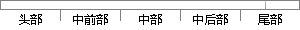

就本文整个研究过程而言，在未来的研究中可以针对以下几点进行：
片段位置图

相似结果|
1
原句片段：就本文整个研究过程而言，在未来的研究中可以针对以下几点进行：
相似片段 1：的未来发展产生怎样的影响 为了说明这些问题 针对朝...就具体研究进程而言 本文将从历史制度主义理论出发 ...整过程我国政府在历次朝核危机中的外交政策比较1 图...
|
※ 片段修改建议 ※
近似词参考：- 整个：全部
- 研究：钻研
- 过程：进程 历程
- 未来：将来
- 研究：钻研
- 进行：举行
系统自动生成语句：就本文全部钻研进程而言，在将来的钻研中可以针对以下几点举行：
注：本片段修改建议为系统自动生成，仅供参考。